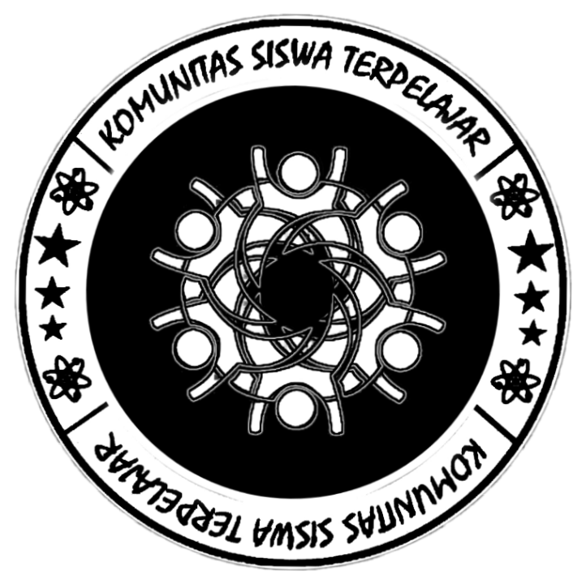

KOSTRAD 020 OFFICIAL adalah komunitas siswa terpelajar alumni dari kelas MIA D angkatan tahun 2020 SMA Negeri 1 Tongkuno. Dibentuk sebagai wadah silaturahmi dan kebersamaan, komunitas ini bertujuan
mempererat hubungan antar anggota setelah masa sekolah. Melalui berbagai kegiatan sosial, reuni, dan proyek kreatif, KOSTRAD 020 (KD20) menjadi simbol solidaritas, nostalgia, dan semangat kebersamaan yang terus
hidup meski waktu telah berlalu.
More Social Media
More Social Media
